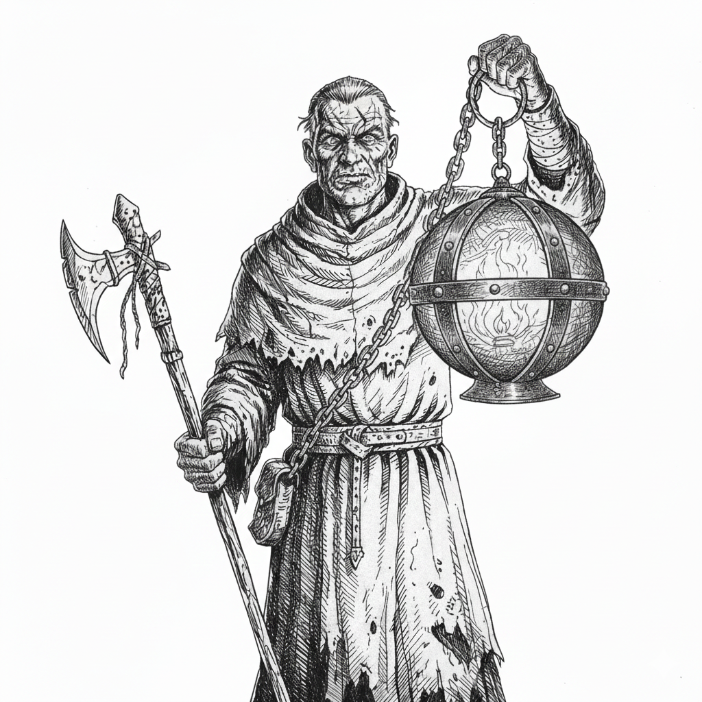

The sun god Dorvos turned his face away after the northern empire fell. You carry his cinder—an ever-burning coal of holy wood locked in iron—and you walk toward the lowest place in the world. If you can bring light to where it has never touched, maybe he'll come back. Maybe.
You carry the Lantern of Dorvos on a sacred journey tracked by your Pilgrimage progress (1-10). The lantern must never leave your possession—lose 1 Progress per turn without it.
If you end a session without the lantern (lost or extinguished), you must complete The Sacrifice before the next session ends or suffer Involuntary Immolation:
Failure to sacrifice means death by holy fire from within. This is the price of bearing Dorvos's light.
Aelric, Daveth, Theron, Marius, Castien, Eldric, Sorin, Brennan
Sera, Ilya, Maren, Kael, Thessa, Riven, Cyndra, Ashlyn
Choose one for each:
Eyes: Haunted, Fervent, Tired, Burning
Hair: Shaved, Ash-streaked, Braided with sun symbols, Wild
Body: Weathered, Scarred, Lean, Imposing
Clothes: Scorched robes, Pilgrim's cloak, Tattered vestments, Heavy furs
You start with these moves:
You bear the Lantern of Dorvos: an iron lantern on a heavy chain, housing an ever-burning cinder of holy wood. It weighs 1, has the close and forceful tags, and you may use STR or WIS when you Hack and Slash with it.
The lantern provides light (near range) and never goes out unless extinguished by powerful magic or divine curse.
All your priestly moves channel through the lantern. Without it, you cannot use Radiant Healing, Holy Fire, or Turn the Darkness.
The iron contains Dorvos's presence. Without the lantern, his raw power burns you from the bones outward. See The Price of Loss.
You begin with 1 Progress. Mark Progress when you move toward your goal (bringing the cinder to the lowest place in the world) or overcome an obstacle on your pilgrimage.
At character creation, define what you believe "the lowest place in the world" is.
When you reach 10 Progress, you have arrived. The GM will tell you what final trial awaits.
Benefits:
If you stray from the pilgrimage or abandon it, lose all Progress and take -1 ongoing until you atone.
While the lantern is missing:
At 0 Progress, you only suffer the -1 ongoing. You don't die yet—but Dorvos's heat builds in your marrow.
If the flame is extinguished, you must rekindle it before the session ends or you die.
If you end a session without the lantern (lost or extinguished), you have until the end of the next session to make The Sacrifice or you will Involuntarily Immolate.
When your lantern is lost or extinguished at session's end, you have until the end of the next session to complete this ritual:
Choose one:
After The Sacrifice, the lantern returns (found in ash, delivered by fate) and the flame reignites. You may continue.
If you refuse or cannot complete The Sacrifice by the deadline, Dorvos's unfiltered presence consumes you:
You Involuntarily Immolate. Your bones ignite, your flesh erupts. Deal 2d10 damage (ignores armor) to everything in close range, including allies. You die screaming. The lantern is destroyed. The pilgrimage ends.
When you hold the lantern close to a wounded ally and pray for Dorvos's mercy, roll+WIS. ✴On a 10+, restore 1d8+WIS HP and they feel warmth and hope. ✴On a 7-9, restore 1d8 HP but choose one:
When you invoke the cinder's flame against enemies, describe your manifestation and roll+WIS:
✴On a 10+, it manifests as intended. ✴On a 7-9, choose one:
When you raise the lantern and invoke Dorvos's name against creatures of shadow, undead, or evil, roll+WIS. This does not work on mortals. ✴On a 10+, choose 3. ✴On a 7-9, choose 1:
Choose an alignment:
Lawful
Uphold a vow or tenet of Dorvos's teachings, even when it costs you.
Good
Use the lantern's light to protect or heal someone, expecting nothing.
Neutral
Make progress on your pilgrimage, regardless of who it helps or harms.
Fill in the name of one of your companions in at least one:
_____ does not believe Dorvos will return. Their doubt troubles me.
I have sworn to _____ that I will see this through, no matter the cost.
I saved _____ with the lantern's light. They have walked with me since.
_____ lost someone in the battle where Dorvos fell. I carry their grief.
Your Load is 10+STR.
You carry the Lantern of Dorvos (1 weight, close, forceful, ever-burning, irreplaceable).
You start with dungeon rations (5 uses, 1 weight) and pilgrim's robes (worn, 1 weight).
Choose your armor:
Choose one relic from the northern empire:
Choose one:
When you gain a level from 2-5, choose from these moves:
When you use Holy Fire, you may spend 1 Progress to maximize its effect: deal maximum damage, affect everyone in range, or burn through any armor. The cinder flares—but you pay with distance from your goal.
The lantern's light extends to far range at will. Allies within the light gain +1 ongoing against fear, corruption, or despair.
When you Hack and Slash with the lantern, you may knock enemies back, disarm them, or wrap the chain around them to restrain (your choice).
When you hold the lantern against someone afflicted by poison, disease, or corruption, roll+WIS. ✴On a 10+, it is burned away and they are cleansed. ✴On a 7-9, it is weakened or slowed but not removed.
When you take damage meant for an ally, you may channel it through the lantern. Roll+CON. ✴On a 10+, the damage is absorbed and the lantern flares—you take none. ✴On a 7-9, you take half and the light dims until you rest.
You've carried the lantern a long way. Gain +1 armor when wielding it.
When you plant the lantern and pray over it for several minutes, it sheds light and warmth for an hour without you holding it. This gives you a free hand but the lantern cannot be used as a weapon or focus during this time.
When you gain a level from 6-10, choose from these moves or the level 2-5 moves:
Replaces: Keeper of the Flame
Once per session, when you fail a roll related to your pilgrimage, you may pray to Dorvos for guidance. The GM offers you a choice:
The lantern now deals d10 damage. When you invoke holy fire through it in melee, add the messy tag.
When you plant the lantern in the ground and declare "Here I stand", roll+WIS. ✴On a 10+, you and allies within the light cannot be moved, frightened, or corrupted for the scene. ✴On a 7-9, as above but you cannot move while maintaining it—if you do, it ends.
Requires: 10 Progress
When you reach the lowest place with the cinder, you may attempt to commune with Dorvos. The outcome depends on your faith, your actions, and the GM's judgment. Dorvos may return, speak, or remain silent—but the world will change.
When you are dying or defeated, you may choose to let the cinder consume you.
You burst into radiant flame:
You die, but you become legend—the priest who burned for the sun. This is a glorious death; you do not need to make The Sacrifice, for you have become the sacrifice.
You are immune to fear, despair, and supernatural attempts to break your will. When others see your resolve, they draw strength: allies near you gain +1 to Last Breath.
When you speak a commandment in Dorvos's name ("Stand!" "Burn!" "Kneel!"), roll+WIS. ✴On a 10+, mortals who hear you must obey or Defy Danger to resist. ✴On a 7-9, they hesitate but may still act. This costs 1 Progress.
The cinder cannot be extinguished by mortal means—only divine intervention can darken it now.
The pilgrimage is everything. The lantern is your life. Dorvos is silent, but the fire still burns.
Into the Barrowlands Campaign